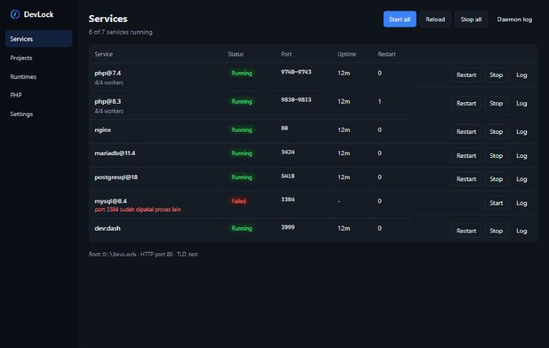
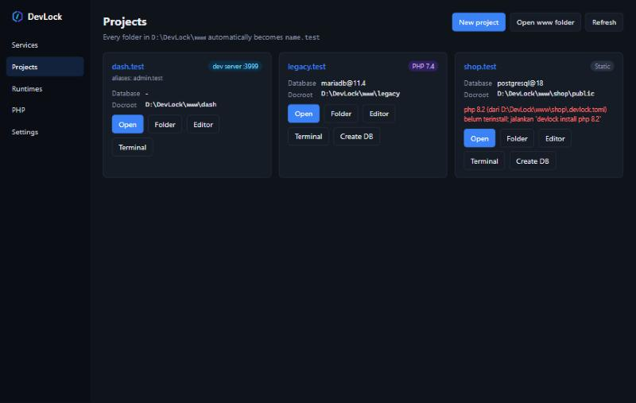

DevLock Guide
This guide explains how to install DevLock, run your first project, and use its other features. Commands are typed in PowerShell or Command Prompt; most are also available in the GUI. CLI messages are in Indonesian; the GUI can be switched to English in Settings → Tampilan (Appearance).
Requirements
- Windows 10 or 11, 64-bit.
- The latest Visual C++ Redistributable
(x64), needed by PHP and Apache.
devlock doctortells you if it is missing. - Port 80 (and 443 for HTTPS) not used by another program such as IIS, Laragon, or XAMPP.
- An internet connection while downloading runtimes. Once installed, DevLock runs fully offline.
Installation
Download from the Releases page and compare the
file's SHA256 with the .sha256 file in the same release.
Option 1: installer (recommended)
Run devlock-vX.Y.Z-windows-x64-setup.exe. DevLock is installed per user in
%LOCALAPPDATA%\DevLock without admin rights, with a Start Menu shortcut and an entry in
Apps & features.
Option 2: portable
Extract devlock-vX.Y.Z-windows-x64.zip anywhere, for example D:\DevLock, then:
D:\DevLock\bin\devlock.exe init
After installing
To use devlock, php, composer, node, and other commands from
any terminal, add the shim folder to PATH and open a new terminal:
devlock path add
Windows warnings. DevLock releases are not signed yet. SmartScreen may show "Windows protected your PC": choose More info → Run anyway. Smart App Control sometimes blocks freshly released executables; this usually clears up on its own after a while. See troubleshooting.
How DevLock works
Everything DevLock owns lives in its install folder:
| Folder | Contents |
|---|---|
bin\ | devlock.exe (CLI), devlock-gui.exe, devlock-shim.exe |
runtimes\ | Installed runtimes, one folder per version (e.g. php\8.3.12) |
www\ | Your projects; each subfolder becomes <name>.test |
data\ | Database, cache, and email data per instance |
shims\ | php.exe, node.exe, mysql.exe, … that pick the project's version |
etc\, logs\, ssl\ | Generated configuration, service logs, CA and certificates |
devlock.toml | Global configuration (ports, TLD, default versions, etc.) |
Three core ideas:
- Versions per project. A
.devlock.tomlfile in the project folder sets the PHP, Node, database, and other versions. Without it, the global defaults are used. - Separate instances. Each PHP version has its own php-cgi pool; each database + version
(
mysql@8.4,postgresql@18) has its own port and data folder. They can all run at the same time. - Only what is used runs.
devlock startstarts the nginx, PHP pools, databases, caches, and dev servers your sites need. Installed runtimes that no site uses are not started.
First steps
List the available versions, then install what you need. The first version you install becomes the default.
devlock list php --available devlock install php 8.3 devlock install composer devlock install nginx
Create a www\hello folder containing an index.php, then run:
devlock start devlock status
Open http://hello.test. The first time, DevLock asks for permission (UAC) to add the domain to the
Windows hosts file. To avoid that for every new project, enable the wildcard DNS.
Stop everything with devlock stop, or the Stop all button in the GUI.
Laravel projects
What to install
| Runtime | Need | Command |
|---|---|---|
| PHP | Required | devlock install php 8.3 |
| Composer | Required | devlock install composer |
| nginx | Required | devlock install nginx |
| Database | Pick one | devlock install mysql 8.4 / mariadb 11.4 / postgresql 17 |
| Node.js | For Vite | devlock install node 22 |
| Redis | Optional | devlock install redis 8 |
| Mailpit | Optional | devlock install mailpit |
New project
devlock new laravel shop --php 8.3 --db mysql@8.4
DevLock runs composer create-project, writes .devlock.toml, creates the
shop database, fills in the database connection and APP_URL in .env, and
registers shop.test. In the GUI: Projects tab → New project.
Existing project
Copy or clone the project into www\shop, then create www\shop\.devlock.toml:
php = "8.3" database = "mysql@8.4" cache = "redis@8" # optional dev = "npm run dev" # Vite also runs on devlock start
Create the database and adjust .env:
cd www\shop devlock start devlock db create shop composer install php artisan migrate
# .env
DB_CONNECTION=mysql
DB_HOST=127.0.0.1
DB_PORT=3384
DB_DATABASE=shop
DB_USERNAME=root
DB_PASSWORD=
Each instance's port is derived from its version (see Databases);
devlock current in the project folder shows it.
Vite in a PHP project. In a Laravel project, dev = "npm run dev" runs Vite as a
service next to PHP, so shop.test is still served by Laravel and assets load from the
Vite dev server. You can also leave dev out and run npm run dev yourself in a
terminal.
Node.js projects (Next.js, Nuxt, Vite)
devlock install node 22 devlock new next dashboard --node 22
For an existing project, just add the dev server command:
# www\dashboard\.devlock.toml
node = "22"
dev = "npm run dev"
devlock start runs that dev server as the dev:dashboard service, reads the port from
its output (Vite, Next.js, Nuxt, Astro, Angular, …), and points dashboard.test at that port,
including websockets for hot reload. To pin the port, write proxy_port = 5173. The Node version is
also read from .nvmrc, .node-version, or volta in
package.json.
The npm, npx, pnpm, yarn, and corepack shims
use the project's Node. Enable pnpm/yarn once with corepack enable.
WordPress & other PHP
devlock new wordpress blog --db mariadb@11.4
DevLock downloads the official WordPress, creates the database, and fills in wp-config.php. Other
templates: Symfony, CodeIgniter 4, Vite + React, Vite + Vue, Nuxt, and static HTML
(devlock new --list).
The document root is detected automatically: public\, web\,
public_html\, dist\, or the project folder. Override it with
docroot = "app/public".
Extensions, Xdebug, and php.ini
devlock php ext enable gmp intl --php 8.3
devlock php xdebug install # download from xdebug.org + enable
devlock php ini set memory_limit 1G
Changes apply immediately to running PHP pools. Xdebug uses debug,develop mode, starts on the
XDEBUG_SESSION trigger, and connects to port 9003 (VS Code, PhpStorm). All of this is also on the
PHP tab in the GUI.
Apache & .htaccess
For applications that rely on .htaccess:
devlock install apache
# www\legacy\.devlock.toml
php = "7.4"
webserver = "apache"
nginx still receives every request and forwards this site to Apache on 127.0.0.1:8180. Apache
processes .htaccess (mod_rewrite, headers, auth) and uses the same PHP pools, so per-project PHP
versions still apply.
.devlock.toml reference
| Key | Example | Meaning |
|---|---|---|
php | "8.3" | PHP version (also from config.platform.php in composer.json) |
node | "22" | Node version (also from .nvmrc) |
go, python, java | "1.27", "3.13", "21" | Go, Python, Java versions |
database | "mysql@8.4" | Database instance: mysql, mariadb, postgresql, mongodb |
cache | "redis@8" | Cache instance: redis or garnet |
webserver | "apache" | nginx (default) or apache |
docroot | "public" | Document root relative to the project folder |
aliases | ["shop.local"] | Extra domains |
dev | "npm run dev" | Dev server run as a service |
proxy_port | 5173 | Pin the dev server port and proxy the domain to it |
https | true | Also serve over HTTPS |
https_redirect | true | Redirect HTTP to HTTPS |
Changing this file needs no manual restart: the daemon notices within a few seconds. To pick a version from the
terminal: devlock use php 8.2 (project) or devlock use php 8.2 --global.
Databases
| Engine | Port | Example | Local user |
|---|---|---|---|
| MySQL | 3300 + major×10 + minor | mysql@8.4 → 3384 | root, no password |
| MariaDB | 3400 + (major−10)×20 + minor | mariadb@11.4 → 3424 | root, no password |
| PostgreSQL | 5400 + major | postgresql@18 → 5418 | postgres, no password |
| MongoDB | 27000 + major×10 + minor | mongodb@8.0 → 27080 | no authentication |
Every instance listens on 127.0.0.1 only. Change ports with [ports] in
devlock.toml, e.g. "mysql@8.4" = 3306.
devlock start db # every database instance in use devlock db create shop devlock db list --instance mysql@8.4 devlock db dump shop # → data\backups\mysql-8.4\shop-<time>.sql devlock db restore shop_copy backup.sql devlock db drop shop --yes
The mysql, mysqldump, psql, pg_dump, and
mongosh shims connect to the project's instance automatically.
Adminer
devlock install adminer
Open http://adminer.test. The server field offers your DevLock instances, and passwordless login is
allowed because this site is only reachable from your own machine.
Redis & Garnet
devlock install redis 8
devlock use cache redis@8 # or cache = "redis@8" in .devlock.toml
redis-cli ping
Ports: redis@7 → 6379, redis@8 → 6389. Set REDIS_PORT in
.env accordingly. The alternative is Microsoft Garnet (devlock install garnet,
cache = "garnet@2", port 6402), which runs in memory only.
Local HTTPS
devlock ssl trust # once: install the DevLock CA (Windows shows a dialog) devlock ssl enable # HTTPS for every site, or https = true per project devlock ssl redirect on # optional: HTTP → HTTPS devlock reload
In the GUI, the "DevLock CA not trusted" warning on the Services tab has a Trust DevLock CA
button. Chrome and Edge trust this CA right away. Firefox only reads CAs from the machine
store, so run devlock ssl trust --machine once (UAC). PHP, Composer, and Node are also configured
to trust the DevLock CA.
.test domains
By default DevLock writes site domains to the Windows hosts file through UAC whenever a site is added. To make
every *.test, including subdomains like api.shop.test, work without the hosts
file:
devlock dns enable # once (UAC)
devlock dns status
DevLock runs a small DNS server on 127.0.0.1:53 and Windows sends only .test queries
to it; other DNS is untouched. Port 53 must be free; the Windows Internet Connection Sharing service
(Mobile Hotspot, Hyper-V NAT) can take it, and devlock dns status detects that.
Email (Mailpit)
devlock install mailpit devlock start mail
Every email from your projects is caught and readable at http://mail.test. PHP's
mail() is pointed at Mailpit automatically; for Laravel set MAIL_MAILER=smtp,
MAIL_HOST=127.0.0.1, MAIL_PORT=1025 (new projects from devlock new are
already filled in).
Share publicly
devlock install cloudflared
devlock share shop # → https://<random>.trycloudflare.com
Uses a Cloudflare Quick Tunnel without an account. Anyone with the URL can reach the site until you press
Ctrl+C. Absolute URLs generated by the app (e.g. APP_URL) still point to
shop.test.
Go, Python, Java
devlock install go 1.27
devlock install python 3.13
devlock install java 21 # Eclipse Temurin
The go, gofmt, python, pip, java,
javac, and jar shims use the project's version from .devlock.toml,
go.mod, .python-version, or .java-version. The Java shims also set
JAVA_HOME for Maven and Gradle. These runtimes do not run as services.
GUI & tray
Open DevLock from the Start Menu (or bin\devlock-gui.exe). Switch the language to
English in Settings → Tampilan.

- Services: the status of every service, start/stop/restart per group (
php@8.3,mysql@8.4,dev:<site>), and logs. - Projects: the site list; open in a browser, folder, editor, or terminal; create a database; New project from a template.
- Runtimes: install versions with progress, remove them, and pick the default.
- PHP: extensions, Xdebug, and php.ini per version.
- Settings: www folder, TLD, ports, HTTPS, autostart, editor, and language (Indonesian/English).

Closing the window only hides it to the tray; services keep running. Right-click the tray icon to start/stop everything, open a project, or quit.
Terminal & editor
The Terminal button on a project card opens a terminal in that folder with the shims on PATH. The Editor button opens VS Code, Cursor, Windsurf, Zed, Sublime Text, or PhpStorm (configure it in Settings if needed). For a dedicated Windows Terminal profile:
devlock terminal install
Profiles, export & import
Stack profiles
devlock profile save laravel # save the services that are running devlock profile use legacy # stop everything, run another profile devlock profile list
Moving to another computer
devlock config export devlock-export.toml
devlock config import devlock-export.toml # on the new computer
The export file contains devlock.toml and the runtime list; on import, missing runtimes are
installed automatically. Move project folders yourself.
From Laragon or XAMPP
devlock import --dry-run # preview first devlock import # C:\laragon\www / C:\xampp\htdocs → www
Projects are added as junctions, so the files stay where they are. Add --copy to copy them
instead. Stop Laragon/XAMPP before devlock start so the ports don't clash.
Updates
devlock update --check devlock update
Close the GUI first (right-click the tray → Quit). DevLock stops the services, downloads the latest release,
verifies the checksum, replaces the binaries, and refreshes the shims. If Windows blocks the new binaries, the
old version is restored automatically. If a runtime download fails, DevLock tries mirrors (configurable under
[mirrors]).
Troubleshooting
devlock doctor # check PATH, ports, Visual C++, CA
devlock logs nginx -f
devlock logs php@8.3
Port 80 is already in use
The service status names the process using the port, usually IIS, Laragon, XAMPP, or an old Skype. Stop that
program, or change the port in Settings / [http] port.
The site can't be reached
Make sure the domain is registered: run devlock hosts (approve UAC) or enable the
wildcard DNS. Also check devlock status.
Error 502 or 500
Check the PHP pool log (devlock logs php@8.3) and logs\nginx-error.log. For dev
server sites, make sure the dev:<site> service is running.
"An Application Control policy has blocked this file"
That is Windows Smart App Control blocking unsigned executables, sometimes including runtimes like nginx or PHP. It usually clears up on its own after a while; try again later. DevLock does not change Windows security settings.
The browser warns about the certificate
Run devlock ssl trust (Firefox: --machine), then close and reopen the browser.
Uninstall
devlock stop
devlock dns disable # if it was ever enabled
devlock hosts --clear
devlock ssl untrust
devlock path remove
devlock terminal remove
Then uninstall from Apps & features (installer) or delete the DevLock folder (portable). Uninstalling
does not remove runtimes, databases, or projects; back up what you need (devlock db dump) before
deleting the folder.
DevLock sends no usage data. Outgoing connections are only made when you download runtimes, update, or use
devlock share.
CLI reference
| Command | Purpose |
|---|---|
devlock init | Prepare folders and devlock.toml |
devlock list <runtime> [--available] | Installed / available versions |
devlock install <runtime> [version] | Install a runtime |
devlock uninstall <runtime> <version> | Remove a runtime (data is kept) |
devlock use <runtime|database|cache> <version> [--global] | Pick a version |
devlock which <command>, devlock current | Versions used in this folder |
devlock start|stop|restart [target] | all, nginx, php@8.3, db, cache, mail, dev:<site> |
devlock status, devlock reload | Service status, reload configuration |
devlock logs <service> [-f] | Service logs |
devlock site list | List sites |
devlock new <template> <name> | New project |
devlock db ... | create, list, drop, dump, restore |
devlock php ... | ext, xdebug, ini |
devlock ssl ... | trust, enable, redirect, status, bundle |
devlock dns ..., devlock hosts | .test domains |
devlock share <site> | Public tunnel |
devlock import, devlock config export|import, devlock profile ... | Move and save configuration |
devlock terminal ..., devlock path add|remove, devlock shims | Windows integration |
devlock update [--check], devlock doctor | Updates and diagnostics |
Full help for each command: devlock <command> --help.